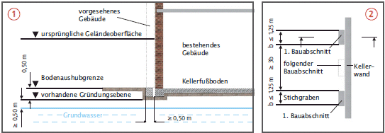
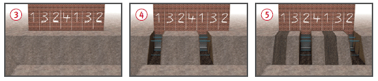
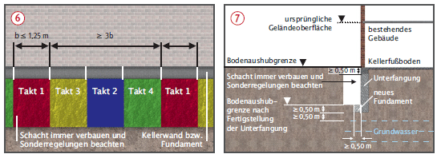
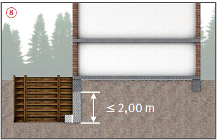

Gründungen neben Fundamenten Unterfangungen
|
|

Gefährdungen
- Nicht fachgerecht geplante und ausgeführte Unterfangungen sowie Gründungsarbeiten im Einflussbereich bestehender Gebäude können die Standsicherheit beeinträchtigen. Hierdurch können Beschäftigte und Anwohner gefährdet werden.
Allgemeines
- Bei Gründungsarbeiten direkt neben einer bestehenden Bebauung kann es erforderlich werden, Fundamente kurzfristig bis zur Fundamentunterkante freizulegen.
- Bei direkt neben dem bestehenden Bauwerk hergestellten Baugruben oder bei nachträglich unter ein Gebäude gebauten Kellergeschossen müssen die vorhandenen Fundamente unterfangen werden.
Schutzmaßnahmen
- Sofern keine Spezialtiefbauverfahren eingesetzt werden, dürfen diese Arbeiten nur abschnittweise nach DIN 4123 ausgeführt werden.
- Die Randbedingungen der DIN 4123 für Ausschachtungen neben Gebäuden gelten auch bei den hier beschriebenen kurzfristigen Fundamentfreilegungen und Unterfangungen. Die Vorgaben hinsichtlich folgender Punkte müssen erfüllt sein:
- Gebäude, Boden und Grundwasser,
- Planung und Bauleitung,
- Bautechnische Unterlagen,
- Bodenaushubgrenze,
- Bauleitung,
- Sicherungsmaßnahmen an bestehenden Gebäuden.
Ausschachtung bis zur Fundamentunterkante
- Zunächst nur bis zu der Bodenaushubgrenze der DIN 4123 ausschachten.
- Restaushub abschnittweise herstellen (4 Arbeitstakte)

 .
.
- Nicht tiefer als Unterkante vorhandenes Fundament ausschachten.
- Aushubabschnitte nicht breiter als 1,25 m.
- Zwischen zeitgleich ausgeführten Aushubabschnitten immer die 3-fache Abschnittsbreite Abstand halten .
- Nach dem Herstellen eines Aushubabschnittes neues Fundament betonieren.
Zusätzliche Voraussetzungen für Unterfangungen
- Standsicherheitsnachweis für den Endzustand der Unterfangung, ggf. auch für Zwischenbauzustände.
- Unterfangungswanddicke entsprechend Standsicherheitsnachweis, mindestens gleich der Dicke des vorhandenen Fundaments.
- Die Unterhöhlung des vorhandenen Fundaments ist auf die Wanddicke der Unterfangung zu begrenzen.
- Die bestehende Wand wirkt als Scheibe.
Vorgehensweise zur Herstellung von Unterfangungen
- Ausschachtung zunächst nur bis zur Bodenaushubgrenze gem. DIN 4123.
- Unterfangungswand abschnittsweise herstellen (4 Arbeitstakte)


 .
.
- Unterfangungsabschnitte nicht breiter als 1,25 m.
- Zwischen zeitgleich ausgeführten Unterfangungsabschnitten immer die 3-fache Abschnittsbreite Abstand halten.


- Stichgräben immer kraftschlüssig verbauen und statisch nachweisen, wenn die Fertigstellung der Unterfangungslamelle nicht innerhalb eines Tages erfolgt.
- Dauerhafte seitliche Stützwirkung des Verbaus durch Wiederverfüllen oder Umsteifen sicherstellen.
- Keine beeinträchtigenden Erschütterungen während der Unterfangungsarbeiten.
Reihenfolge und Ausführung der Arbeitstakte
- Der Verbau eines jeden Stichgrabens wird nach der Fertigstellung eines Segmentes zurückgebaut.
- Der Graben wird provisorisch temporär wiederverfüllt und leicht verdichtet. Die seitliche Stützwirkung kann alternativ auch durch Umsteifung aufrecht erhalten werden.
- Sonderregelung für Unterfangungstiefen bis 2,0 m
 .
.
- Der Verbau muss nur bis Vorderkante des zu unterfangenden Fundaments hergestellt werden, wenn folgende Voraussetzungen erfüllt sind:
- mindestens steifer bindiger Boden,
- Fertigstellung einer Unterfangungslamelle innerhalb eines Tages,
- es dürfen keine losen Teile (Fundament, Boden) herausbrechen.
Zusätzliche Maßnahmen zur Begrenzung von Setzungen
- Zusätzlich zu Setzungsmessungen erforderlichenfalls Verschiebungsmessungen durchführen und dokumentieren.
- Rissebeobachtung, z. B. durch Gipsmarken oder Rissmonitore.
- Bei Gründungen und Unterfangungen die Auswirkungen durch neue Belastung des Baugrundes auf die alte Bausubstanz berücksichtigen.
- Altes und neues Bauwerk durch vertikale Bewegungsfuge trennen.

07/2017